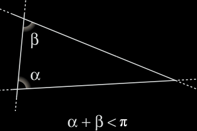
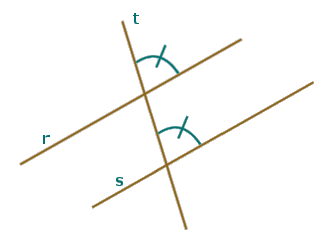

Postulati di Euclide
La geometria euclidea è un sistema matematico attribuito al matematico alessandrino Euclide, che la descrisse nei suoi Elementi.
I postulati euclidei sono solo cinque; sono pochi, considerando il numero di assiomi che si utilizzano nelle moderne teorie assiomatiche, ma, come vedremo, affermano molto di più di quello che può apparire inizialmente.
Il problema fondamentale che dovette afrontare Euclide fu quello della scelta di tali enunciati primari. Secondo la metodologia assiomatica d'impostazione aristotelica, i postulati, essendo proposizioni di avvio, devono descrivere proprietà semplici; essi hanno inoltre il compito di indicare proprietà molto generali, in quanto la loro fuizione è di fondare l'intera struttura deduttiva. Ultima condizione richiesta è data dal fatto che la loro verità, non essendo raggiunta attraverso una dimostrazione, deve essere assicurata tramite l'evidenza, ossia secondo una corrispondenza con una realtà oggettiva.
Ecco la prima peculiarità e al tempo stesso, il limite dell'assiomatica classica: si vuole astrarre, generalizzare e provare ogni proprietà solo mediante relazioni logiche; il criterio di scelta dei postulati si basa però ancora su qualcosa di conreto che è l'evidenza, garantita dall'intuizione, di un loro rapporto con la realtà esterna.
Solo dopo la scoperta e la faticosa accettazione delle geometrie non euclidee, il criterio dell'evidenza perderà ogni importanza per la scelta dei postulati.
I 5 postulati di Euclide sonoPostulati di Euclide:
Tra due punti qualsiasi è possibile tracciare una ed una sola retta;
A straight line segment can be drawn joining any two points.Si può prolungare un segmento oltre i due punti indefinitamente;
Any straight line segment can be extended indefinitely in a straight line.Dato un punto e una lunghezza, è possibile descrivere un cerchio;
Given any straight line segment, a circle can be drawn having the segment as radius and one endpoint as center.Tutti gli angoli retti sono congruenti tra loro;
All right angles are congruent.Due rette tagliate da una trasversale si incontrano dalla parte dove si formano angoli coniugati interni la cui somma è minore di due angoli retti.
Il V postulato di Euclide nella versione attribuitia a Proclo (V sec. d.C.):
Dati una retta e un punto fuori di essa, è unica la retta passante per quel punto e parallela alla retta data.
Questo postulato è diventato famoso perché nel corso dei secoli, vista l’impossibilità della sua dimostrazione, si è cercato di costruire una geometria indipendente da esso. Nella prima metà del XIX secolo alcuni grandi matematici (Lobacevskij, Bolyai, Riemann, Klein...) hanno dimostrato l’esistenza di più geometrie in cui sono validi tutti i postulati di Euclide, tranne il quinto. Tali geometrie si chiamano, appunto, non euclidee. Vista la
complessità dell’argomento, forniamo in questa scheda solo un’idea intuitiva della geometria di Lobacevskij, mediante un modello.
Il piano è rappresentato dai punti interni a una circonferenza e le rette sono corde del cerchio (esclusi i punti estremi). Il quinto postulato in questo modello non è valido. Infatti per il punto P della figura passano infinite rette che non intersecano la retta r, quindi per un punto passano infinite parallele a una retta data (v. figura seguente).
Non è un caso, probabilmente, che negli Elementi le proposizioni fino alla I,28 non fanno uso del postulato V, formando un corpus di teoremi che verrà poi chiamato geometria assoluta. Da questo corpus si devono però escludere le proposizioni dedotte dalla proposizione 16 (Un angolo esterno di un triangolo è maggiore di ciascuno dei due angoli interni non adiacenti), la cui dimostrazione pur non usando il V postulato, ricorre al II (prolungabilità indefinita di un segmento), che esclude le geometrie ellittiche.
A transversal is a line that intersects two (or more) other lines at distinct points; all of the lines lie in the same plane. In the following figure, c is a transversal for lines a and b. Angles that are formed between r and s are interior angles; those outside a and b are exterior angles.
Consideriamo due rette parallele r ed s e una terza retta t che le tagli. Si intuisce che gli angoli evidenziati in figura qui a fianco, chiamati angoli corrispondenti, devono essere uguali (o meglio congruenti cioè sovrapponibili): la retta t ha infatti la stessa inclinazione rispetto alle rette r ed s che sono parallele.
Da questa osservazione e dall'uguaglianza di angoli opposti al vertice segue l'uguaglianza dei quattro angoli acuti che si formano (vedi figura seguente).